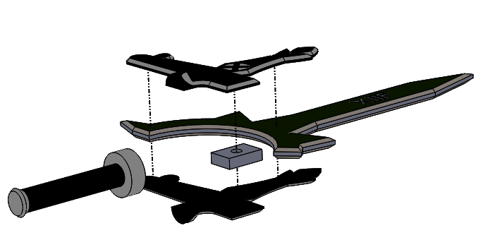
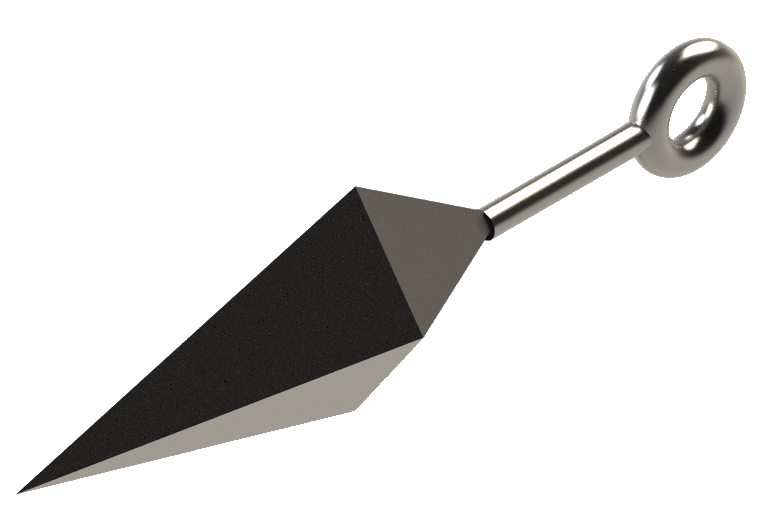

3D Prints & Models

 Elucidagger
Elucidagger
I was a huge fan of a show called Sword Art Online, and really wanted to make a prop. With a name being a major indicator, any relevant memorabilia would be a sword, and my printer bead couldn't quite handle it. I chose to replicate the Elucidator at the size of a dagger, hence Elucidagger.
Design/Assembly
As I was using a FDM printer, I couldn't print any pieces with an overhang. I sketched the rough dimensions and shape of the dagger, and designed each part and it's mirror that could be made with a flat base. The holes left in the guard allow it to be positioned and secured with 2 press fit M5 dowel pins and 1 M10 dowel pin. The XIIF on the blade is my own personal mark.
 Kunai + Shuriken
Kunai + Shuriken
I'm also a big Naruto fan. I've been building origami shuriken for as long as I can remember, so I jumped at the chance to print one. It turned out to be a pretty quick project, so I designed a kunai knife as well.
Design/Assembly
I designed both parts as a whole, and cut them in half so that they could be easily printed. I wanted to try a different attachment method that was less permanent. I had neodymium magnets on hand, so I created small depressions in each half of the parts to accommodate the magnets. While the depressions would cause material to print on an overhang, the feature was small enough that any warping would be negligible.
Future Improvements
While I do like the look of the parts, I would print future revisions with metal rather than PLA for a more realistic look. I would also explore different attachment methods, as pieces held together by magnets tend to fall apart when dropped. Half of the fun of throwing starts is throwing them! (which is no fun if they immediately explode)


 Seismic Wand
Seismic Wand
Quitting Runescape is easy, I've done it a thousand times! But seriously, some good has come of this terrible addiction- I have a bunch of things to make now. The Seismic Wand is a super expensive magic weapon that I would rather build because I could never afford it in game *tear*. This particular design was inspired by another player named Tsaboc who embarked on a similar project.
Design/Assembly
This one is still in development, so no actual print yet. The assembly is split into 5 distinct sections, each designed to be printed as halves with no overhang. The plan is to assemble each section using a strong adhesive.
Future Improvements
I wanted the blue sections to have a more crystalline look, so I looked into shaped plastics and fake gems. One thing I considered was printing a negative of the crystalline parts as a resin mold. I would also like to add some kind of lighting, much like Tsaboc's project (maybe with a voice command so I can make my lumos mean something).